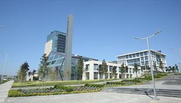

FERHAT
ÇELİK
Web Tasarım
ANASAYFA
BİLİŞİMMMM
BİLİŞİM MÜHENDİSLİĞİ
BİLİŞİM'İN GELCEĞİ
TANITIM VİDEOSU
İLETİŞİM
HAKKIMDA
HABERLER
Dijital dönüşümün hızlandırılması için atılması gereken temel adımlar
Meslek lisesi öğrencileri köylerdeki bilgisayarları onarıyor

Teknoloji tabanlı kalkınmanın kalbi Bilişim Vadisi'nde atacak
❮
❯
DUYURULAR
10 Nisan 2018 IoT EurAsia Nesneler Konuşuyor Sektörler Dinliyor!
BİLİŞİM GRUBU, Mart 2018 Toplantısı 14 Mart’ta yapılacak
Data Center Expo Eurasia Fuarı’nda “Teknoloji Trendleri ve Veri Merkezlerinin Geleceği” Konuşulacak